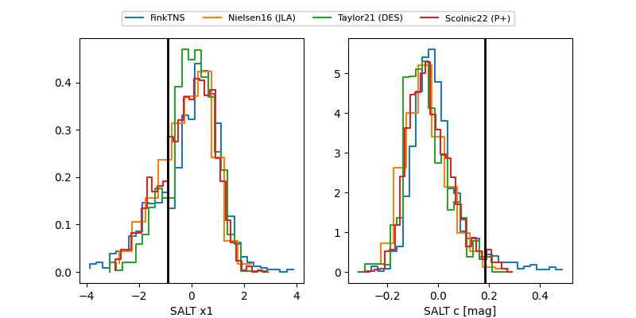

FINK: ZTF25ablgyoi
Lasair: ZTF25ablgyoi
ALeRCE: ZTF25ablgyoi
TNS: 2025vhx
YSE: 2025vhx
ZTF25ablgyoi (ztf,fink)
2025vhx (tns,yse)
ATLAS25kiq (atlas)
equatorial (ra, dec) = (49.5069,-7.03674)
galactic (l, b) = (189.7187,-49.86613)

last atlasc=19.30, atlaso=19.82, ztfg=19.26, ztfr=19.89
3 atlasc, 1 atlaso, 1 ztfg, 8 ztfr detections